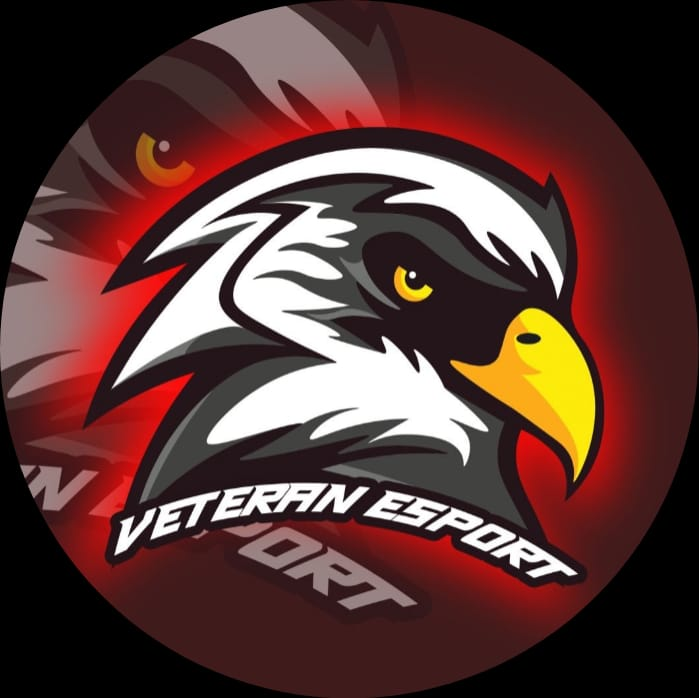

AKTIVITAS
Mengikuti UKM Veteran E-Sport merupakan kegiatan Saya sejak masuk ke dalam perkuliahan. Beberapa prestasi sejak mengikuti UKM Veteran E-Sport :
- Juara 3 Veteran Esport Development League PUBGM (2021)
- Juara 2 Information System Competition PUBGM (2021)
- Juara 2 AFISHCO PUBGM UNAIR (2021)
- Peserta Kualifikasi Pubg Mobile Campus Championship (2021)
- Peserta Kualifikasi IEL University PUBGM (2021)
- Finalis Economic Management Competition PUBGM (2021)
 Sejak menempuh kuliah di UPN Veteran Jawa Timur, saya mengikuti
beberapa kegiatan kepanitiaan organisasi HIMA maupun BEM :
Sejak menempuh kuliah di UPN Veteran Jawa Timur, saya mengikuti
beberapa kegiatan kepanitiaan organisasi HIMA maupun BEM :
- Panitia Divisi SP Mosaik BEM Fasilkom (2022)
- Panitia Divisi Lomba PUBGM Fasilkom Fest (2021)
- Panitia Divisi Lomba PUBGM Fasilkom Fest (2022)
- Panitia Divisi Perlengkapan SIFO Mengajar HIMASIFO (2022)
- Panitia Divisi Perlengkapan Aksi Belajar HIMASIFO (2022)